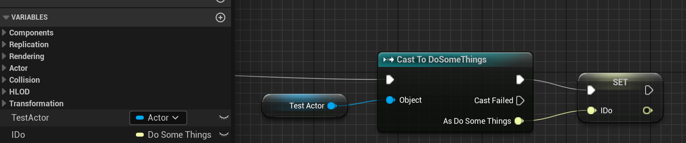
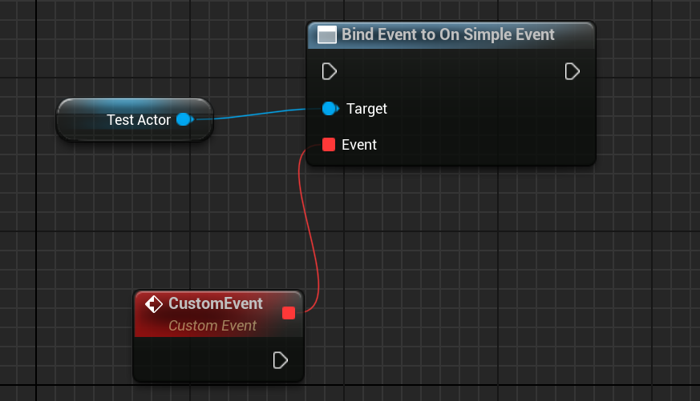

简介
《Game Physics and Development Notes》是一份围绕游戏物理与游戏开发实践的长期笔记，记录了从物理建模到工程实现，再到实际游戏应用过程中的关键思考与取舍。
本笔记面向具备一定技术背景、希望深入理解“游戏物理为什么这样实现“的开发者，强调原理、工程经验与实际问题之间的联系，而非公式堆砌或 API 使用说明。
作者：小杰克
个人主页：https://swang81.github.io/
-
📘 在线阅读（GitHub Pages）：
GamePhysicsNotes -
💻 GitHub 仓库：
swang81/GamePhysicsNotes
物理引擎中符号和单位
引言
本文为物理引擎系列的开篇，本文详细介绍物理引擎的几个约定：符号、单位、坐标系。
符号约定
标量（Scalar）通常用斜体字母表示，如质量或时间。
向量（Vector）则通常用粗体小写字母,例如, ,。或带箭头的字母，如,,表示。我们将优先采用粗体字母表示向量。
| 物理量 | 标量符号 | 向量符号 | MKS单位 | 描述 |
|---|---|---|---|---|
| 时间 (Time) | - | (秒) | 描述事件发生的时刻或持续时间。 | |
| 质量 (Mass) | - | (千克) | 物体惯性的量度。 | |
| 位置 (Position) | - | 或 | (米) | 物体在世界空间中的坐标。 |
| 位移 (Displacement) | - | (米) | 位置的变化量。 | |
| 速度 (Velocity) | (速率) | 位置随时间的变化率。 | ||
| 加速度 (Acceleration) | 速度随时间的变化率。 | |||
| 力 (Force) | - | (牛顿) | 导致物体加速度的原因。 | |
| 冲量 (Impulse) | - | 力在一段时间上的累积效应。 | ||
| 动量 (Momentum) | - | 物体质量和速度的乘积。 | ||
| 角度 (Angle) | - | (弧度) | 描述物体的朝向或旋转量。 | |
| 角速度 (Angular Velocity) | - | (omega) | 角度随时间的变化率。 | |
| 角加速度 (Angular Acceleration) | - | (alpha) | 角速度随时间的变化率。 | |
| 力矩 (Torque) | - | (tau) | 导致物体角加速度的原因。 | |
| 转动惯量 (Moment of Inertia) | (惯性张量) | 物体对旋转运动的阻力。 |
单位制
绝大多数现代物理引擎，如Box2D和NVIDIA PhysX，都强烈推荐或内部默认使用 MKS单位制，它是国际单位制（SI）的一部分。该系统以米（Meter）、千克（Kilogram）和秒（Second）作为基本单位。所有其他物理量的单位都由这三个基本单位导出，例如力的单位牛顿（N）定义为 kg·m/s²。
右手和左手坐标系
坐标系定义了空间中点的位置和方向，是进行任何几何计算的基础。在3D空间中，主要存在两种手性（Chirality）的坐标系：右手坐标系和左手坐标系。
-
右手坐标系 (Right-Handed System)：这是数学和物理学界的标准。你可以用右手来判断：伸出食指指向X轴正方向，中指指向Y轴正方向，那么拇指的指向就是Z轴的正方向。OpenGL、Bullet 和大部分物理引擎都使用右手坐标系。
-
左手坐标系 (Left-Handed System)：用左手可以进行类似判断。食指指向X轴正方向，中指指向Y轴正方向，拇指指向Z轴正方向。Direct3D 、 Unity和UE 引擎使用左手坐标系。
两种坐标系之间的转换可以通过反转其中一个轴的坐标来实现。例如，从右手系转换到左手系，可以令 。在混合使用不同坐标系约定的库（例如，使用左手系的渲染引擎和使用右手系的物理引擎）时，必须在数据交换的边界处进行正确的坐标转换。
向上的方向
另一个重要的约定是哪个轴代表“上”方向。最常见的两种约定是：
- Y-Up：Y轴的正方向为“上”。这在2D游戏和许多3D建模软件（如Blender）中很常见。
- Z-Up：Z轴的正方向为“上”。这在建筑和CAD领域以及某些3D引擎（如Unreal Engine）中更为流行。
各种软件，坐标系和向上的约定可以参考Freya总结的图。

数学工具
向量
向量是物理引擎中最基本的数据结构，用于表示具有大小和方向的物理量，如位置、速度和力。一个三维向量通常表示为 。
核心的向量运算包括：
点积在物理引擎中的常见应用包括：计算两个向量之间的夹角、判断两个向量是否正交（点积为零）、计算一个向量在某方向上的分量。
叉积很多地方会使用，例如和角动量等物理量时至关重要。
3x3旋转矩阵
3x3矩阵主要用于表示旋转和惯性张量。一个绕任意轴旋转角度的旋转矩阵，可以用罗德里格斯公式（Rodrigues’ Rotation Formula）表示：
其中是向量的反对称矩阵（Skew-Symmetric Matrix）：
旋转矩阵具有正交性，即，且行列式为1。
4x4变换矩阵
4x4矩阵用于表示一个完整的仿射变换，包含旋转和平移。其一般形式为：
其中是3x3旋转矩阵，是平移向量。这种矩阵在与图形API（如OpenGL或Direct3D）交互时尤其有用，因为它可以直接传递给着色器来变换顶点。
四元数(Quaternions)
虽然旋转矩阵可以表示旋转，但在实际应用中，直接使用矩阵进行旋转插值或连续旋转累加会遇到问题，例如万向锁（Gimbal Lock）。四元数，提供了一种更优雅、更高效的旋转表示方法。
一个四元数可以写为
或简写为 其中是标量部分，是向量部分。
一个绕单位轴旋转角度的旋转可以用单位四元数表示为：
使用四元数旋转一个向量的公式为：
其中被视为纯四元数，是的逆。对于单位四元数，其逆等于共轭。
惯性张量
对于点质量，惯性由标量质量描述。但对于具有体积和形状的刚体（Rigid Body），其对旋转运动的“阻力”不仅取决于质量，还取决于质量如何围绕旋转轴分布。这种分布特性由一个3x3的对称矩阵——惯性张量来描述。
惯性张量的一般形式为：
其中对角线元素是转动惯量（Moments of Inertia），非对角线元素是惯性积（Products of Inertia）。对于连续质量分布，这些元素的定义为：
惯性张量建立了角动量（）和角速度（）之间的线性关系：
它也出现在旋转动力学的牛顿第二定律的旋转版本中（欧拉方程）：
在物体的主轴（Principal Axes）坐标系下，惯性张量可以简化为一个对角矩阵：
其中 , , 是主转动惯量。计算和正确使用惯性张量是实现逼真刚体旋转动力学的关键。物理引擎通常会提供自动计算常见几何形状（如球体、长方体、圆柱体）惯性张量的功能。
碰撞冲量和相对速度定义
在构建物理引擎时，碰撞响应（Collision Resolution）是最核心的模块之一。而碰撞响应的核心，就是求解冲量标量 。本文将从第一性原理出发，一步步推导 的公式，并深入探讨容易被忽视的相对速度定义及其对仿真稳定性的影响。
1. 问题的定义
假设有两个刚体 和 在世界空间发生碰撞。
- 碰撞点：
- 碰撞法线：（定义为从 指向 的单位向量）
- 质心到碰撞点的向量：，
- 线速度与角速度： 和
我们的目标是找到一个冲量标量 ，当它作用于碰撞点时，能够改变两个物体的速度，使得它们在碰撞后的相对速度符合牛顿碰撞定律。
2. 关键：相对速度的定义
相对速度的定义决定了后续所有公式的符号。为了与工业级引擎（如 Bullet, Box2D）保持一致，我们定义碰撞点处的相对速度 为：
其中，碰撞点在物体上的速度公式为：
为什么这样定义？
当 时，意味着两个物体正在相互靠近（接近速度为负）；当 时，意味着物体正在相互远离。
3. 物理约束：牛顿碰撞定律
碰撞后的相对速度 与碰撞前的相对速度 满足以下关系：
其中 是恢复系数（Restitution）。这是我们求解 的唯一方程。
4. 冲量对速度的影响
根据冲量定理，施加冲量 后，物体的速度变化为：
对于物体 A（受力方向为 ）：
对于物体 B（受力方向为 ）：
5. 核心推导步骤
我们将碰撞后的相对速度展开：
代入速度变化公式 ：
提取公因子 ：
现在，两边同时点乘法线 ，并利用牛顿碰撞定律 ：
6. 最终公式
整理上式，求得 的标准公式：
对比关于《Game Physics in One Weekend》
在《Game Physics in One Weekend》的代码实现中，你会发现分子没有负号。这是因为该书将法线定义为“从 A 指向 B”，且在应用冲量时手动反转了符号。 建议：在实际工程中，务必采用上述标准推导。标准推导保证了只要物体在靠近（点积为负），算出的 就一定是正数，这符合物理直觉，也方便后续处理摩擦力不等式约束。
混合现实（MR）游戏开发入门
近年来，虚拟现实（VR）、增强现实（AR）和混合现实（MR）技术的迅速崛起，推动了游戏开发进入全新的维度。作为一名VR/MR游戏开发者，我亲眼见证了技术的不断进步与升级。从微软第一代HoloLens头显到HTC Vive，再到Quest、Quest 2，直到如今为Meta Quest 3开发游戏，我深刻感受到了这些技术如何颠覆传统2D和3D视觉表现，并重新定义了游戏的交互方式和沉浸感体验。
许多朋友常常问我：“VR、AR和MR有何区别？”、“购买哪个头显最合适？”、“有哪些好玩的VR、MR游戏？”为了解答这些问题，我决定写这篇文章，探讨这三种技术的核心特点及其在游戏中的应用，介绍主流游戏设备，并为开发者梳理Meta Quest 3的Unity开发路线。
VR游戏：沉浸式虚拟体验
VR（虚拟现实）游戏让玩家通过头戴显示设备（HMD）完全沉浸在虚拟环境中。通过视觉、听觉以及手柄的振动反馈，VR游戏为玩家提供了高度的沉浸感。
推荐一款科幻风的VR游戏——《红色物质2》（Red Matter 2）。这款屡获殊荣的沉浸式解谜冒险游戏，让玩家扮演特工Sasha，在月球基地揭开神秘的“红物质”背后的秘密。游戏使用优化后的Unreal Engine进行渲染，营造了一个科幻的环境，带来极具沉浸感的游戏体验。

AR游戏：现实与虚拟的融合
与VR游戏不同，AR游戏通过智能手机、AR眼镜或平板电脑等设备，通过设备上的摄像头捕捉现实世界图像，并将虚拟物体叠加到这些现实图像中，从而为玩家呈现现实与虚拟融合的场景。
推荐一款AR手机游戏——《宇宙战线 AR》。在这款游戏中，玩家将化身为宇宙舰队指挥官，指挥自己的舰队在浩瀚的宇宙中与敌人展开激烈战斗。游戏利用AR技术将虚拟战舰与现实环境结合，你在家中的客厅可以指挥舰队与敌舰、激光炮火展开战斗。
MR游戏：虚拟与现实的深度交互
MR（混合现实）游戏将VR和AR的特点结合，提供更为自然的交互体验。玩家佩戴MR头显后，不仅能看到虚拟元素，还能与真实世界进行深度互动。MR设备通过理解周围环境，实现虚拟元素与现实物体的实时交互。
推荐最新发行的MR游戏—《空间特工队》（Spatial Ops）。这款游戏被誉为MR模式下的FPS游戏，提供单人战役模式与竞技场模式。在单人模式中，玩家扮演一名特工，在激烈的射击战斗中保护现实世界；而竞技场模式则让玩家将家中的空间瞬间转变为战场，体验科幻版的CS。

设备推荐：主流硬件分析
在VR、AR和MR技术中，目前VR和MR游戏应用最为广泛。以下是一些主要硬件设备的介绍：
Meta Quest系列：由Facebook推出，是全球销量领先的头显设备。以Quest 3为例，这款设备搭载了骁龙XR2 Gen 2处理器，单眼分辨率高达2064×2208，刷新率可达到90Hz，售价大约在3000-4000元之间，是同价位中性能表现最优的选择。游戏需要通过Meta商店购买，由于网络原因，在国内使用时需要借助加速器。适合对硬件配置和系统设置有一定了解的用户。
Pico系列：作为国内VR/MR市场的领先品牌，Pico系列在2024年推出了与Quest 3竞争的Pico 4 Ultra。这款设备同样搭载骁龙XR2 Gen 2处理器，功能与Quest 3类似，尽管平台上的游戏数量不及Meta多，但在国内使用时无需加速器，适合更广泛的用户群体。
Vision Pro：苹果公司于2024年推出的Vision Pro是高端MR设备的代表，配备M2芯片，单眼分辨率高达3660×3200，是市场上计算能力最强的头显之一。Vision Pro支持沉浸度调节，并可在MR和VR模式之间自由切换。然而，由于该设备未配备手柄，游戏交互主要依赖手势控制。因此，目前适配的游戏多为棋牌类和休闲类游戏。设备售价接近3万元，适合追求极致显示效果的用户。
开发路线：从头开始
对于开发者，以下是从Meta Quest 3+Unity的开发路线，帮助你一步步准备好开发环境。
-
确定游戏体验方式：首先要确定游戏的体验方式，是完全沉浸式的VR体验，还是混合现实的MR体验。现在很多游戏提供两种模式，供玩家自由切换。
-
选择游戏引擎：目前，Meta Quest平台上的游戏大多数使用Unity开发，约70%-80%是Unity开发的，剩余的20%-30%使用Unreal Engine（UE）或其他引擎。可以根据个人技术背景和需求选择适合的引擎。
-
准备硬件设备和开发者账号：尽管Meta提供了Meta XR Simulator头显模拟器等工具，许多复杂的场景和性能测试仍需真实设备进行验证。建议购买Quest 3并使用Windows系统的PC进行开发。所有Meta Horizon Store上的应用发布者都需要在Meta开发者中心创建开发者账号。
-
安装Meta开发工具：Meta Quest Developer Hub：Meta提供的开发应用，可进行头显设备设置、性能分析、安装游戏软件以及访问学习资源。Meta Quest Link：通过USB-C或WiFi连接头显到Windows电脑，使用Link模式可以在Quest中直接查看Unity或Unreal游戏运行效果，无需重新编译，提高研发效率。
配置Unity
Unity的配置主要包括以下几个方面：安装Meta的SDK（All-in-One）、修改项目的目标平台、使用Meta Project Setup Tool进行默认参数设置，安装Meta开发模拟器等。基本功能可以通过添加Building Blocks进行快速实现，详细信息可参考相关文档。
学习MR相关模块
如果开发MR游戏，建议阅读官方的《MR设计指南》，了解常见的基本概念。你还需要熟悉以下功能模块：Passthrough、Scene、Spatial Anchors和MRUK工具包。在Meta Quest Developer Hub中，可以查找相关模块的代码示例进行补充学习。
按照上述步骤，你就可以在Unity中开始编写MR应用，逐步实现“Hello World”级别的MR项目。
总结
希望通过这篇文章，大家能够对VR、AR、MR技术和游戏开发有所了解，并能根据自己的兴趣和需求开发自己喜欢的游戏。从选择合适的设备到配置开发环境，逐步走向开发成功的第一步。
UE C++ 相关内容总结
1.作为 UE 程序员为什么都需要掌握 UE C++和蓝图编程？
因为二者在引擎中的定位不同，却又相辅相成：
- C++: 负责底层基础，适合实现性能关键模块、框架系统，以及扩展引擎功能。
- 蓝图：面向上层逻辑，强调快速迭代、关卡交互和玩法组合，方便策划与美术直接参与。
只会 C++，灵活性不足，每次修改逻辑都要重新编译，效率低； 只会蓝图，性能和功能有限，无法胜任复杂系统（如多人联机、GAS、定制渲染管线）。所以最佳实践是 C++ 写底层与性能逻辑，蓝图处理上层与关卡逻辑。一句话总结：C++ 打地基，蓝图盖房子；两者结合，才能高效又稳健。
2. UE C++和普通 C++的区别
Unreal Engine（UE）在底层使用 C++ 语言开发，但 UE C++ 并不等同于标准 C++，它有自己的一套扩展体系和开发规范。
2.1 UE 对象体系：UObject 和 Actor
UE 对象由引擎管理生命周期，普通 C++ 对象需要手动管理。
- 普通 C++：类是普通的类型，继承和生命周期完全由程序员控制。
- UE C++：所有游戏对象大多继承自 UObject 或 AActor。UE 引入垃圾回收（Garbage Collection） 管理 UObject 生命周期。内存分配与销毁不建议直接 new/delete，而是通过 UE 自动进行。
// 普通 C++
MyClass* Obj = new MyClass();
delete Obj;
// UE C++， 不用手动 delete，GC 会管理
UObject* Obj = NewObject<UMyObject>();
2.2 UE 宏与反射系统
普通 C++ 无法直接支持蓝图编辑器、序列化和 GC，UE C++ 通过宏实现。
- 普通C++：没有内置的反射，属性、函数都不能在运行时被动态访问。
- UE C++：使用宏 UCLASS, UPROPERTY, UFUNCTION 扩展类、变量、函数。实现运行时类型信息、序列化、蓝图可访问、网络同步等。
UCLASS()
class AMyActor : public AActor
{
GENERATED_BODY()
public:
UPROPERTY(EditAnywhere, BlueprintReadWrite)
int32 Health;
UFUNCTION(BlueprintCallable)
void TakeDamage(int32 Amount);
};
2.3指针与智能指针
UE 自带指针体系，兼容 GC 和蓝图系统。
- 普通 C++：*、&、std::shared_ptr、std::unique_ptr 常用。
- UE C++：强烈依赖 UObject* 指针，由 GC 管理。对非 UObject 类型可以使用 UE 提供的智能指针 TSharedPtr、TWeakPtr、TUniquePtr 专门用于非 UObject 类型的对象管理。新版本引入 TObjectPtr 以增强指针安全性。
2.4编译机制与模块化
UE 编译器不只是 C++ 编译，还包括宏解析、蓝图接口生成等。
- 普通 C++：编译器直接处理 .cpp 文件，依赖头文件。模板和宏在编译时展开。
- UE C++：UE 引入 UHT（Unreal Header Tool） 解析 UCLASS、UPROPERTY、UFUNCTION 宏，生成辅助代码.generated.h 文件。UBT(Unreal Build Tool)负责整个 UE 项目的构建管理。整个编译过程如下：
1. 开始：写代码
├── .h/.cpp 文件（包含 UCLASS / UPROPERTY / UFUNCTION 宏）
└── .Build.cs / .Target.cs 配置模块依赖
2. 调用 Unreal Build Tool (UBT)
├── 解析 .uproject、.Build.cs、.Target.cs
├── 计算模块依赖
└── 判断哪些模块需要编译
3. 调用 Unreal Header Tool (UHT)
├── 扫描所有头文件
├── 解析 UCLASS / USTRUCT / UPROPERTY / UFUNCTION
└── 生成 .generated.h 文件（反射、GC、蓝图注册）
4. 回到 UBT
├── 收集 .cpp + 生成的 .generated.h
├── 调用编译器（MSVC / Clang / LLVM）
└── 编译生成模块对象文件 (.obj)
5. 链接阶段
├── 按模块依赖顺序链接各个 .obj
└── 生成最终二进制：
- 编辑器：.dll
- 游戏可执行：.exe / 目标平台二进制
6. 完成
└── 可运行的游戏或模块加载到 UE 编辑器
2.5蓝图与可视化支持
- 普通 C++：无法直接被可视化工具访问。
- UE C++：可通过 BlueprintCallable、BlueprintReadWrite 等宏让 C++ 类和函数暴露给蓝图。可视化编辑器和 C++ 无缝结合，大幅提升开发效率。
2.6事件、委托和回调
- 普通 C++：通过函数指针、std::function、虚函数实现回调。
- UE C++：提供 Delegate、MulticastDelegate、Event，封装函数指针和对象绑定。支持动态绑定、蓝图可调用。
3.关于裸指针 T*
指针本质就是：记录一个对象在内存中的地址。当你想操作某个对象时，持有它的指针就能直接访问它，而不是重新创建一个副本。T*（原始指针）：直接指向对象内存，不参与垃圾回收，也不能自动保存/加载（不可序列化），容易悬空。引用的对象销毁时不会自动清理指针。 举个例子：
APlayerController* PC = GetWorld()->GetFirstPlayerController();
这里我们并没有“新建”一个 PlayerController，而是找到了当前世界里已有的对象，并保存了它的内存地址到 PC。之后我们就可以通过 PC 调用它的函数或访问变量。在使用指针前，需要检查指针是不是 nullptr。例如，我们使用 controller 设置游戏的输入模式。
if (PC)
{
PC->SetInputMode(FInputModeGameAndUI());
}
例如，我们在一个 Character 子类 HeroCharacter.h 和 HeroCharacter.cpp 中，添加 CameraComponent，使用下面的方法，创建 CameraComponent 实例。Character 会负责子组件的生命周期。
//HeroCharacter.h
UPROPERTY(VisibleAnywhere)
UCameraComponent* CameraComp;
//HeroCharacter.cpp
CameraComp = CreateDefaultSubobject<UCameraComponent>(TEXT(「CameraComp」));
CameraComp->SetupAttachment(RootComponent);
4.关于 TObjectPtr
在虚幻 5 以后，推荐使用 TObjectPtr 替换*,上面的可以写成下面的方式
UPROPERTY(VisibleAnywhere)
TObjectPtr<UCameraComponent> CameraComp;
TObjectPtr<T>：轻量级智能指针，参与 GC 垃圾回收，指向对象被销毁时自动置空，可序列化，适合 UPROPERTY 成员使用。
建议：在 UE5 中，凡是 UObject 成员且需要序列化、编辑器操作或 GC 管理，都推荐使用TObjectPtr<T>，几乎是裸指针的安全升级版。
5.软引用 TSoftObjectPtr
在 Unreal Engine 5 中，TSoftObjectPtr（软引用）是一种存储资产路径而非直接指向对象的指针。适合大型资源、插件化资产或延迟加载资源，能够节省内存和加快启动速度。具有延迟加载，节约内存，运行时显式加载。例如：
UPROPERTY(EditAnywhere)
TSoftObjectPtr<UMaterial> WeaponMaterial; // 保存路径而不占内存
void ApplyMaterial()
{
if (WeaponMaterial.IsValid())
{
MyMesh->SetMaterial(0, WeaponMaterial.LoadSynchronous()); // 显式加载
}
}
6.弱引用 TWeakObjectPtr
弱引用不会阻止 GC 回收对象，对象被销毁后，指针自动失效，不会悬空。访问前需要进行 IsValid()检查。比如，标记最近攻击敌人,敌人有可能被击杀。当敌人被销毁后，指针自动失效，避免悬空，不阻止 GC 回收。
TWeakObjectPtr<AActor> LastHitEnemy = EnemyA;
if(LastHitEnemy.IsValid())
{
LastHitEnemy->Destory();
}
7.访问运算符「.」和「->」
平时使用，通过编码 IDE 自动提示即可。
- 「.」访问对象的实例成员，结构体类型使用。比如，FVector, FRotator,FTransform,FHitResult, FColor
- 「->」访问指针所指对象的成员。比如，UObject, AActor,UActorComponent
8. 静态函数
静态函数特点是属于类本身，不依赖对象实例。调用时，不需要创建对象。内存只会保存一份，不会随着实例复制。静态函数经常用于：工具函数、蓝图函数库，全局工厂方法。
比如，UGameplayStatics 在 Unreal Engine C++ 里几乎是最常用的工具类之一，很多初学者和老手都会用到它。它其实就是一大堆 静态函数 的集合，主要用于方便获取游戏世界中的常用信息和执行通用操作。
// 获得玩家控制器
APlayerController* PC = UGameplayStatics::GetPlayerController(this, 0);
// 获得 Pawn
APawn* Pawn = UGameplayStatics::GetPlayerPawn(this, 0);
// 查询 Actors
TArray<AActor*> FoundActors;
UGameplayStatics::GetAllActorsOfClass(GetWorld(), AMyEnemy::StaticClass(), FoundActors);
// 播放声音
UGameplayStatics::PlaySoundAtLocation(this, ExplosionSound, GetActorLocation());
// 播放特效
UGameplayStatics::SpawnEmitterAtLocation(GetWorld(), ExplosionFX, GetActorLocation());
// 应用伤害
UGameplayStatics::ApplyDamage(TargetActor, 50.f, GetController(), this, UDamageType::StaticClass());
// 切换关卡
UGameplayStatics::OpenLevel(this, FName(「MainMenu」));
9. 引用、地址运算符、函数指针
&在 UE C++中的用法与 C++类似，主要包括下面几种：
9.1引用（Reference）
给变量起别名，操作引用等于操作原变量。避免大对象拷贝（如 FVector、FTransform）。用于函数参数传递，避免复制，提高性能。
// 引用版本
void ModifyVector(FVector& Vec)
{
Vec.X += 1.0f;
Vec.Y += 1.0f;
}
// 引用版本 调用
FVector MyVec(0,0,0);
ModifyVector(MyVec); // 直接传变量
9.2地址运算符
获取变量在内存中的地址，返回指针。
// 指针版本
void ModifyVector(FVector* Vec)
{
if(Vec)
{
Vec->X += 1.0f;
Vec->Y += 1.0f;
}
}
// 指针版本调用
FVector MyVec(1,2,3);
ModifyVector(&MyVec); //传入地址
引用版本的 ModifyVector 函数，调用语法简单，保证不为 null,不需要解引用。
指针版本的 ModifyVector 函数，需要取地址 &MyVec，函数内部要检查是否为 nullptr，可以传入动态分配指针或空指针，函数内部通过检查保证安全。
UE C++ 常用推荐：
- 普通 struct（FVector、FTransform、FQuat 等），引用（Reference）优先。原因：语法简洁、安全、无需检查 null。内部仍然修改原对象
- 对于 UObject / Actor / Component，指针传递，可以为空，函数需检查指针有效性。
9.3函数指针
函数指针就是一个变量，它 保存函数的地址，可以通过它调用函数。在 UE C++ 中，函数指针常用于 Delegate、回调、绑定函数 等场景。下面是一个成员函数绑定 Delegate 的例子。参考的代码片段如下：
// 创建 Actor 实例
AMyActor* MyActor = World->SpawnActor<AMyActor>();
// 声明 Delegate 类型
DECLARE_DELEGATE(FMyDelegate);
// 声明 Delegate
FMyDelegate Delegate;
// 绑定成员函数：对象 + 成员函数指针
Delegate.BindUObject(MyActor, &AMyActor::PrintActorName);
// 执行 Delegate
if (Delegate.IsBound())
{
Delegate.Execute();
}
10.关于前向声明
在 Unreal Engine C++ 开发中，前向声明就是在文件中 提前声明一个类、结构体或枚举的名字，而不包含其完整定义。前向声明是提升编译效率、减少头文件依赖、避免循环引用的重要手段。
10.1 前向声明的使用场景：
- 成员指针和引用类型
如果类成员是指针或引用，可以只做前向声明，不需要包含完整头文件。常见 UObject, Component, Actor 等。
class UStaticMeshComponent; // 前向声明
class AMyActor : public AActor
{
GENERATED_BODY()
private:
UStaticMeshComponent* MeshComp; // 指针可以使用前向声明
};
- 函数参数、返回值为指针或引用
函数声明时，如果参数或返回值是指针或引用，也可以使用前向声明。如果返回值或参数是对象本身（非指针/引用），必须包含完整头文件。
class AMyActor;
AMyActor* SpawnActor(); // 返回值为指针
void ProcessActor(AMyActor* Actor); // 参数为指针
10.2 不可以使用前向声明的情况
// class AMyActor;
// 1. 不能是对象成员（值类型）
class UMyComponent
{
AMyActor Actor; // 前向声明不能用，编译器需要知道大小
};
// 2. 不能是继承
class AMyChild : public AMyActor // 需要完整定义
{};
// 3. 访问成员函数或变量, 无法前向声明
AMyActor* Actor;
Actor->SetActorLocation(...); // 不能访问成员，编译器不知道内容
11.强制转换Cast
在 Unreal Engine C++ 开发中，Cast 是最常用的类型安全强制转换方式，它用于在 UObject、Actor、Component 等类层级中进行类型转换，同时保证安全性。
Cast是 UE 提供的模板函数，用于将父类指针或 UObject 指针转换为子类类型。如果转换成功，返回目标类型指针；失败返回 nullptr。例如：
AActor* SomeActor = ...;
AMyCharacter* MyChar = Cast<AMyCharacter>(SomeActor);
if (MyChar)
{
MyChar->DoSomething(); // 成功转换后可以安全调用
}
Cast 使用的注意事项:
- 检查失败情况：Cast 只有在对象真的是目标类型或子类时才会成功。UE C++ 中失败返回 nullptr，蓝图里走 Cast Failed 分支，必须做判空/分支处理。
- 避免滥用：过多依赖 Cast 会让蓝图或 C++ 紧耦合，维护困难。推荐用接口、事件分发器或更明确的变量类型来减少 Cast。
- 关注性能：单次 Cast 开销不大，但高频调用（如 Tick 或循环）中频繁使用会拖慢性能。建议 缓存 Cast 结果，避免重复转换。
12.接口用法
在UE中，Interfaces是一种有效的设计，多个类可以通过接口添加函数。比如，玩家可以通过接口与关卡内的不同Actor进行交互，每个Actor都有不同的反应。在UE C++中定义的接口，既可以在C++类里实现，也可以在蓝图类里实现。
12.1 声明C++接口
继承Uinterface定义一个接口，由于UE的约定，需要写两个类：UDoSomeThings和IDoSomeThings。
U前缀：UInterface继承UObject，用于反射系统。
I前缀：IDoSomeThings是接口类，存放自定义的函数。
#include "CoreMinimal.h"
#include "DoSomeThings.generated.h"
UINTERFACE(MinimalAPI)
class UDoSomeThings : public UInterface
{
GENERATED_BODY()
// 这里就是空的
}
class YOURPROJECT_API IDoSomeThings
{
GENERATED_BODY()
public:
// 这里写接口方法
}
12.2 添加实现方法
在接口中，用两种方式添加两个接口方法。
class YOURPROJECT_API IDoSomeThings
{
GENERATED_BODY()
public:
// 1. C++接口方法
virtual void DoSomeThing() = 0; // 必须virtual
// 2. UFUNCTION接口方法
UFUNCTION(BlueprintCallable, BlueprintNativeEvent, Category="Things")
int GetNumberOfThings();
};
- C++接口方法：必须在子类的C++中实现，不支持蓝图。比如,Gas系统的这个接口，也是C++接口。
virtual UAbilitySystemComponent* GetAbilitySystemComponent() const = 0;
- UFUNCTION接口方法：使用BlueprintNativeEvent宏修饰符时，在C++中可选实现。如果实现需要在_Implementation中实现逻辑。支持在蓝图中可以重写。如果使用BlueprintImplementableEvent，在C++中不能实现，必须要在蓝图中实现。所以，一般大家都使用BlueprintNativeEvent。
UFUNCTION的接口方法，不需要写virtual, 主要是因为UFUNCTION()和GENERATED_BODY() 宏 会生成必要的虚函数声明。
12.3 C++中实现接口
继承接口，在cpp中写函数实现。
#include "CoreMinimal.h"
#include "DoSomeThings.h"
#include "SomeThingsActor.generated.h"
UCLASS(Blueprintable)
class YOURPROJECT_API ASomeThingsActor : public AActor, public IDoSomeThings
{
GENERATED_BODY()
public:
virtual void DoSomeThing() override;
virtual int GetNumberOfThings_Implementation() override;
};
#include "SomeThingsActor.h"
void ASomeThingsActor::DoSomeThing()
{
//....
}
int ASomeThingsActor::GetNumberOfThings_Implementation()
{
return 1;
}
12.4 在蓝图中实现接口
可以在蓝图的Class Settings中添加刚才C++定义的接口。点击Implemented Interfaces中Add, 选择DoSomeThings。在Interfaces中，可以看到接口函数的定义。

12.5 在C++和蓝图中调用
在C++中调用接口，如果是C++实现的接口，可以直接使用Cast<IDoSomeThings>，例如
auto I = Cast<IDoSomeThings>(Actor);
if (I)
{
int Num = I->GetNumberOfThings();
}
如果想在C++中，调用蓝图实现的接口方法，Cast<>方法会返回I = nullptr,因为C++不知道蓝图。可以使用反射系统检测蓝图的接口是否可用。检测的几种方法如下：
// 1. Implements
if (Actor && Actor->Implements<UDoSomeThings>())
{
// Use the interface
}
// 2. DoesImplementInterface
if (UKismetSystemLibrary::DoesImplementInterface(Actor, UDoSomeThings::StaticClass())
{
// use the interface
}
// 3. ImplementsInterface
if (Actor && Actor->GetClass()->ImplementsInterface(UDoSomeThings::StaticClass()))
{
// use the interface
}
检测到定义的接口函数，需要通过Interface wrapper调用接口，如下：
if (Actor && Actor->Implements<UDoSomeThings>())
{
int Num = IDoSomeThings::Execute_GetNumberOfThings(Actor);
}
在蓝图中调用，先判断，再调用接口函数。

12.6 接口定义成变量
如果想把接口像Class类型一样，保存成变量，需要在UE C++中使用（Blueprintable）宏修饰符。
UINTERFACE(Blueprintable)
class UDoSomeThings : public UInterface
{
GENERATED_BODY()
};
在蓝图中，可以直接创建DoSomething类型的Interface变量IDo。如果把一个Actor类型变量保存成接口变量IDo，需要先Cast to DoSomeThings接口后，设定IDo变量。

在C++中，需要创建接口变量需要使用TScriptInterface
UPROPERTY(BlueprintReadWrite)
TScriptInterface<IDoSomeThings> SomethingInstance;
使用这个变量前可以判断是否为空，如果接口实现是在C++完成，可以直接使用。
int Num;
if (SomethingInstance)
{
Num = SomethingInstance->GetNumberOfThings();
}
把实现接口的对象赋值给接口变量的方法如下，直接赋值
if (UKismetSystemLibrary::DoesImplementInterface(Actor, UDoSomeThings::StaticClass()))
{
SomethingInstance = Actor;
}
如果接口的实现是在蓝图中，需要使用
int Num = IDoSomeThings::Execute_GetNumberOfThings(SomethingInstance.GetObject());
使用UOBject类型变量，来直接执行接口也是一种方法。
UPROPERTY(BlueprintReadWrite)
UObject* SomethingInstance;
if (SomethingInstance)
{
int Num = IDoSomeThings::Execute_GetNumberOfThings(SomethingInstance);
}
13.委托用法
UE官方常见委托分类方式：单播，多播和动态。委托是一种常见的回调机制，让一个对象可以把事件通知到另一个对象，解耦逻辑。比如：角色受到伤害，通知UI，更新血条。
13.1 单播委托
Single cast delegate，只能绑定一个函数，没有反射，性能最好。只能在C++中使用，蓝图看不到。适合在“1对1”的通知，比如：一个异步任务完成，通知唯一的回调函数。
无参单播委托
// 声明一个无参的单播委托
DECLARE_DELEGATE(FOnFinished);
// 使用
FOnFinished OnFinished;
// 绑定
OnFinished.BindUObject(this, &AMyActor::HandleFinished);
// 定义函数
void AMyActor::HandleFinished()
{
UE_LOG(LogTemp, Log, TEXT("Task Finished!"));
}
// 调用
if (OnFinished.IsBound())
{
OnFinished.Execute();
// 或者更安全：
// OnFinished.ExecuteIfBound();
}
带参数/返回值的单播委托
// 声明一个带参数的单播委托
DECLARE_DELEGATE_OneParam(FOnDamaged, float);
// 使用
FOnDamaged OnDamaged;
// 绑定
OnDamaged.BindUObject(this, &AMyActor::HandleDamaged);
// 定义函数
void AMyActor::HandleDamaged(float Damage)
{
UE_LOG(LogTemp, Log, TEXT("Actor took %f damage!"), Damage);
}
// 调用
if (OnDamaged.IsBound())
{
OnDamaged.Execute(25.f); // 传递参数
}
带返回值的代理，只需要在宏定义时，使用带有“RetVal”关键字的宏，例如，在执行后获得返回值。其他使用过程类似。
// 声明
DECLARE_DELEGATE_RetVal(int32, OnDamaged);
// 返回值
int32 Result = OnDamaged.Execute();
13.2 多播委托
可以绑定多个函数，一个事件触发时，所有绑定都会被调用。性能依然很好。同样主要用于C++,蓝图不可见。
// 声明
DECLARE_MULTICAST_DELEGATE(FOnDead);
// 使用
FOnDead OnDead;
OnDead.AddUObject(this, &AMyActor::HandleDeath);
OnDead.AddLambda([](){ UE_LOG(LogTemp, Log, TEXT("Lambda called!")); });
// 触发
OnDead.Broadcast();
13.3 动态单播
支持反射，可以暴露给蓝图。可以是单播，也可以是多播。有一定性能开销。 动态单播，一个委托绑定一个函数。如果绑定多个，后面的会覆盖前一个。
// 声明一个动态单播委托（无参数）
DECLARE_DYNAMIC_DELEGATE(FSimpleDynamicDelegate);
// 声明一个动态单播委托（带参数）
DECLARE_DYNAMIC_DELEGATE_OneParam(FOnHealthChanged, float, NewHealth);
UCLASS()
class AMyActor : public AActor
{
GENERATED_BODY()
public:
// 定义成员变量
FSimpleDynamicDelegate OnSimpleEvent;
FOnHealthChanged OnHealthChanged;
void TriggerEvent()
{
// 调用无参委托
OnSimpleEvent.ExecuteIfBound();
// 调用有参委托
OnHealthChanged.ExecuteIfBound(75.0f);
}
};
绑定
// 在另一个类或蓝图中绑定
MyActor->OnSimpleEvent.BindDynamic(this, &UMyComponent::HandleSimple);
MyActor->OnHealthChanged.BindDynamic(this, &UMyComponent::HandleHealth);
// 回调函数格式必须是 UFUNCTION
UFUNCTION()
void HandleSimple() { UE_LOG(LogTemp, Warning, TEXT("Simple event triggered!")); }
UFUNCTION()
void HandleHealth(float Value) { UE_LOG(LogTemp, Warning, TEXT("Health: %f"), Value); }
13.4 动态多播
动态多播，一个委托可以绑定多个函数。触发时会顺序调用所有绑定的回调。声明如下：
// 无参数
DECLARE_DYNAMIC_MULTICAST_DELEGATE(FSimpleMulticastDelegate);
// 带参数
DECLARE_DYNAMIC_MULTICAST_DELEGATE_OneParam(FOnScoreChanged, int32, NewScore);
像下面的方法进行使用：
UCLASS()
class AMyActor : public AActor
{
GENERATED_BODY()
public:
// 使用 UPROPERTY，支持蓝图绑定
UPROPERTY(BlueprintAssignable)
FSimpleMulticastDelegate OnSimpleEvent;
UPROPERTY(BlueprintAssignable)
FOnScoreChanged OnScoreChanged;
void TriggerEvent()
{
// 触发多播委托（依次调用所有绑定函数）
OnSimpleEvent.Broadcast();
OnScoreChanged.Broadcast(100);
}
UFUNCTION()
void HandleSimple() { UE_LOG(LogTemp, Warning, TEXT("Multicast simple event!")); }
UFUNCTION()
void HandleScore(int32 Score) { UE_LOG(LogTemp, Warning, TEXT("Score: %d"), Score); }
};
动态多播绑定
// C++绑定
MyActor->OnSimpleEvent.AddDynamic(this, &UMyComponent::HandleSimple);
MyActor->OnScoreChanged.AddDynamic(this, &UMyComponent::HandleScore);
// C++解绑
MyActor->OnScoreChanged.RemoveDynamic(this, &UMyComponent::HandleScore);
// 蓝图绑定
// 因为用 UPROPERTY(BlueprintAssignable)，蓝图里可以直接拖节点绑定
下面是蓝图中的动态绑定 
13.5 委托总结
| 常见定义宏 | 绑定方式 | 支持蓝图 | 绑定函数个数 | |
|---|---|---|---|---|
| 单播 | DECLARE_DELEGATE | Delegate.BindUObject(this, &Class::Func) | X | 1 |
| 多播 | DECLARE_MULTICAST_DELEGATE | Delegate.AddUObject(this, &Class::Func) | X | 多个 |
| 动态单播 | DECLARE_DYNAMIC_DELEGATE | Delegate.BindDynamic(this, &Class::Func) | V | 1 |
| 动态多播 | DECLARE_DYNAMIC_MULTICAST_DELEGATE | Delegate.AddDynamic(this, &Class::Func) | V | 多个 |
基于PBR流程的游戏3D建模
在前两期中，我们分享了3D建模的多种方法以及游戏PBR（基于物理的渲染）纹理相关知识。本期将重点介绍PBR流程的建模过程。目前网上关于PBR建模的分享视频教程种类繁多，工具使用各异，初学者常常感到眼花缭乱。本文旨在帮助大家理解高质量3D游戏资产的制作框架，从而在学习其他艺术家的制作流程时不再迷茫。
本次分享分为三部分：首先介绍3D模型的特点，然后通过复刻一把废土风格的手枪来了解次世代建模的具体流程，最后分享我学习3D游戏建模的一些心得体会。
PBR流程下的3D游戏模型的特点
PBR建模流程之所以复杂，主要是因为3D游戏模型有其独特的特点。与影视制作的预渲染不同（即先渲染完毕，再进行播放），游戏中的3D模型需要在实时渲染的条件下边渲染边播放。这意味着视觉效果必须快速生成并即时反馈给玩家，从而保证流畅的交互体验。为了实现这一点，一般来说，高质量的游戏需要确保至少60FPS（帧/秒）的渲染速度。而对于VR/MR/XR游戏，为了避免晕动症，渲染速度通常要求达到至少72FPS以上。那么，如何优化性能，提高渲染速度呢？为了满足这些性能要求，模型制作通常会考虑以下几个方面：
多边形数量与性能平衡: 游戏模型必须在有限的多边形数量下展现足够的视觉细节，以适应实时渲染需求，使用的优化技术包括：低多边形建模，减少计算量，保持视觉效果；用法线贴图代替更多的几何体，增强细节表现；采用LOD技术，根据视距动态切换模型的细节层次，降低远景物体的渲染负担。
贴图优化与纹理分辨率: 贴图是表现模型细节的核心，但需要在分辨率和内存占用之间找到平衡：使用合理大小的贴图，避免过大贴图带来的性能瓶颈；应用UV展开技巧，减少纹理浪费和接缝问题；选择合适的纹理压缩格式（如DDS、ASTC）以优化内存使用。
实时光照与材质效果：材质与光照效果直接影响模型的视觉表现，特别是在动态场景中：使用PBR材质，通过金属度和粗糙度定义材质的真实感；优化光照贴图或全局光照（GI）的使用，以减少实时计算；使用环境光遮蔽（AO）贴图，呈现阴影效果，减轻光遮罩计算量。
动画与绑定需求：带有骨骼绑定或动画的模型需要兼顾动作流畅性和计算性能：优化骨骼系统，减少骨骼数量，避免复杂骨骼增加负担；合理分配权重，避免冗余权重；对复杂动画序列进行压缩，减少存储占用。
硬件平台适配：不同硬件平台的计算力不同，因此需要根据平台要求进行优化：在PC设备上使用更精细的模型和材质；针对移动设备优化多边形数量、贴图分辨率和渲染技术；VR设备需要满足双目渲染要求，因此对模型优化的要求更高。
模型兼容性与游戏引擎支持：游戏模型必须与游戏引擎兼容，满足引擎的各种要求：使用支持的文件格式（如FBX、OBJ、GLTF）；校准模型在引擎中的效果，确保渲染无误。
总结来说，游戏模型制作不仅仅是视觉艺术的创作，更是技术与艺术的结合，需要充分考虑性能、细节和适配性。接下来，我们将基于这些特点，深入探讨3D游戏静态模型的制作流程（本次不涉及动画）。
基于PBR流程的3D建模步骤
基于PBR的3D建模流程，不仅仅涉及构建模型的形状，还需要确保材质在真实光照条件下的效果。为了帮助大家更好地理解，我将通过制作一把废土风格的手枪模型，详细讲解次世代建模的步骤。以下是整个流程的详细介绍：
1.概念设计与参考资料收集
在建模前，第一步是获取足够的参考资料。收集大量图片（如真实物品的照片、电影截图或其他游戏中的素材）来确定模型的外观、比例、细节和材质效果。参考资料的收集和管理对于制作过程至关重要。在工业化流程中，原画师会提供三视图（正视图、侧视图、俯视图），这对于建模的准确性和比例的掌控非常重要。
常用工具：PureRef是一款非常方便的参考图管理工具，能够帮助整理和浏览收集的参考图片。很多原画师和3D艺术家常使用此工具来管理参考资料。
2.中模建模
中模是3D建模的基础模型，决定了最终形态的轮廓和比例。此阶段的重点是确保模型的形状清晰，能为后续的细节雕刻和优化打下基础。我们需要注意多边形的数量和几何形状的合理性。在整个建模流程中，模型按多边形数量，会分为低模、中模和高模。低模用于游戏中的实时渲染，负责主要形状和轮廓。高模则用于细节雕刻，通常会包含更多的多边形。中模是介于两者之间的模型。下图展示的是我们使用3ds Max制作的一个枪的中模模型，它帮助我们确定了 模型的基本形状和比例。
常用工具：Maya、3ds Max和Blender是常见的建模工具，用户可以根据个人习惯选择。中模建模时，我们通常使用多边形建模方法，保持模型的灵活性。

3.高模雕刻
在这一阶段，我们将中模导入到雕刻软件中，进一步添加细节。这一过程尤为关键，因为它直接决定了最终模型的精细度。下图，是利用ZBrush雕刻废土枪的边缘，模拟焊接的效果。
常用工具：ZBrush是常见的雕刻软件，艺术家可以通过刷子、笔触等工具进行细节雕刻，如表面划痕、褶皱、焊接痕迹等。这些细节的雕刻帮助模型呈现更加真实的效果，特别是在细节丰富的硬表面（如枪械、机械等）上非常重要。

4.低模制作与UV展开
低模的制作包括对中模进行删减、优化并将其转换成低多边形模型。低模的多边形数量要足够低，以保证游戏的运行效率，但同时又要能够保留足够的形状和细节。合理的多边形分布和拓扑结构非常重要。在这个阶段，我们还需要展开UV，以便后续贴图的制作。在UV展开过程中，模型的表面被“拆解”成平面，形成一个UV图集。需要避免“接缝”问题，确保纹理能够无缝地贴合到模型表面。
常用工具：常见的建模工具可以进行UV展开。复杂的模型可以使用专业工具（如RizomUV）来进行UV展开，这样能够大大提高效率和精度。下图是RizomUV工具的界面，可以看到很多复杂的UV可以被自动摆好。

5.烘焙法线贴图和AO
这一步的关键是将高模的细节转移到低模上，以提升低多边形模型的细节表现。通过烘焙生成法线贴图和AO贴图，能有效增强低模的细节感与立体感。法线贴图：它能够模拟模型表面细节（如划痕、凹陷等表面细节），无需增加多边形数目，从而在保持低多边形的同时展现丰富的细节。AO贴图：它用于模拟物体间的阴影效果，增强模型的立体感和真实感，特别是在光线较弱的区域。在这一步，我们需要确保烘焙效果的准确性，避免出现错位或不自然的阴影。如果法线贴图或AO贴图存在瑕疵，通常需要借助绘图软件进行手动修正，以确保最终效果的精确和自然。
常见工具：Marmoset Toolbag和Substance Painter都可以用于烘焙法线和AO贴图。修改贴图可以使用Photoshop。

6.制作材质贴图
材质的表现是PBR流程中至关重要的一环，决定了模型在不同光照条件下的外观。此步骤我们将低模模型和法线贴图、OA贴图，导入Substance Painter（简称SP），并通过该工具制作材质贴图。在SP中，我们通常会制作几种基础的贴图，如BaseColor、Emissive、Roughness、Metallic等，也会在Normal贴图上添加一些表面细节。
常见工具：Marmoset Toolbag和Substance Painter是常用的烘焙法线和AO贴图的工具，能够高效地将高模细节转移到低模上。对于贴图的修改与精细调整，可以使用Photoshop等图像处理软件，进一步优化贴图效果。

7.导入游戏引擎测试
完成贴图制作后，将低模和材质贴图导入到游戏引擎中（如Unity或Unreal Engine），测试模型在实时渲染中的效果。这一步骤能够帮助我们检查光照效果、材质表现以及模型是否适应引擎的要求。检查帧数表现(FPS)，确保模型不会导致过高的渲染负担，特别是在多边形数量和纹理大小方面。
8.作品展示
最后，为了最大程度地展示模型的细节和质感，3D艺术家通常会使用专门的渲染器（如Marmoset Toolbag、V-Ray等）进行渲染。渲染器可以精准模拟光照、阴影、材质反射等效果，帮助艺术家展示模型的最终效果。如下图，在画面中，可以清晰区别不同的材质表现。


通过这些步骤，我们能够完成一个完整的基于PBR流程的3D模型制作。希望通过这一详细的过程，大家能够更加清晰地理解每个阶段的工作重点，以及如何高效地进行3D建模创作。
一些心得体会
经过几个月的系统学习，我对3D游戏建模有了更全面的理解，也深刻感受到3D游戏建模是一项跨学科的技能，融合了艺术、技术和创意。作为学习者，掌握正确的学习方法和策略，不仅能加速技能提升，还能让学习过程更高效。以下是我为3D游戏建模学习者提供的一些建议，希望能帮助你更快入门：
保持耐心与持续学习：3D建模不同于解题或编程，它更像是绘画的过程。上手可能很容易，但精通却需要时间和实践。刚开始时，进展可能显得缓慢，但不要气馁。坚持练习，保持对艺术和技术的好奇心，不断学习新知识，你一定能掌握这项技能。
注重艺术修养与基础知识：尽管3D建模是一项技术密集型的工作，但其核心依然是艺术。掌握透视、构图、光影、色彩和材质等基本艺术概念，能够帮助你创作出更加生动和有表现力的模型。在ArtStation等平台上欣赏经典游戏美术作品，可以激发你的艺术灵感，并提高你对美学的感知与理解。手绘是提升观察力的有效途径，它帮助你更好地理解空间感、形态及结构。比如，下图展示的是我在学习期间进行的材质绘画练习，借此提升了我对材质的观察和表达能力。

熟悉软件工具与建模概念：在学习3D建模的过程中，我们需要学习下面三类知识：1)建模基本概念，如网格、拓扑、UV和法线等，这类知识可以通过网络查询进行学习，在实践中进行理解；2)建模相关软件的使用，在实践中根据需要不断学习每个功能。下图是一些常见软件图标，供参考。3)项目流程的学习，在实践中，逐步搭建和改进自己的工作流和工具。使用不同的工具解决不同的问题。
做好笔记与总结：学习3D建模的过程充满了技术细节和艺术灵感，因此记笔记和定期总结非常有助于提高效率。记录下在学习过程中遇到的问题及其解决方法，并定期进行复习和总结，这样能帮助你更好地消化和吸收新知识。

结语
3D建模是一项结合技术与艺术的技能，从构思到呈现的每个步骤都充满挑战与创意。希望这篇文章能为你的学习旅程提供有用的指导。无论你是初学者还是有经验的创作者，保持好奇心、持续实践，并总结经验，都会帮助你不断进步。每一次挑战都带来新的成长，期待你在3D建模的世界中，创造出属于自己的精彩作品。